library(MOSuite)
#> Warning: replacing previous import 'S4Arrays::makeNindexFromArrayViewport' by
#> 'DelayedArray::makeNindexFromArrayViewport' when loading 'SummarizedExperiment'
library(dplyr)
#>
#> Attaching package: 'dplyr'
#> The following objects are masked from 'package:stats':
#>
#> filter, lag
#> The following objects are masked from 'package:base':
#>
#> intersect, setdiff, setequal, union
options(moo_print_plots = TRUE)
moo_nidap <- create_multiOmicDataSet_from_dataframes(
sample_metadata = as.data.frame(nidap_sample_metadata),
counts_dat = as.data.frame(nidap_raw_counts)
) |>
clean_raw_counts() |>
filter_counts(group_colname = "Group") |>
normalize_counts(group_colname = "Group") |>
batch_correct_counts(
covariates_colname = "Group",
batch_colname = "Batch",
label_colname = "Label"
) |>
diff_counts(
count_type = "filt",
covariates_colnames = c("Group", "Batch"),
contrast_colname = c("Group"),
contrasts = c("B-A", "C-A", "B-C"),
input_in_log_counts = FALSE,
return_mean_and_sd = FALSE,
voom_normalization_method = "quantile",
) |>
filter_diff()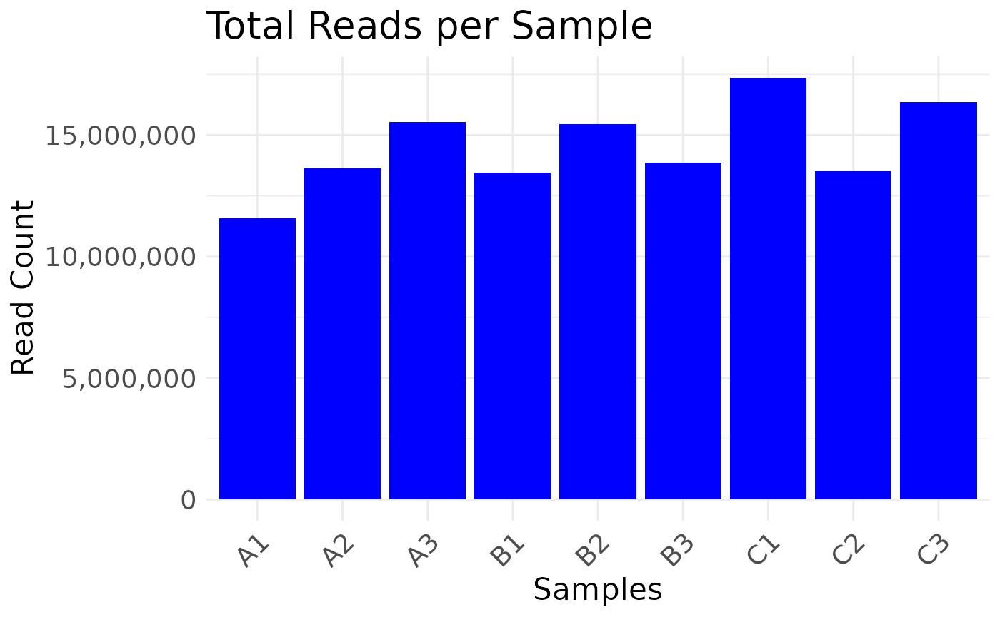
#> Saving 7.29 x 4.51 in image
#> * cleaning raw counts
#>
#> Not able to identify multiple id's in GeneName
#>
#> Columns that can be used to aggregate gene information GeneName
#>
#> Aggregating the counts for the same ID in different chromosome locations.
#> Column used to Aggregate duplicate IDs: GeneName
#> Number of rows before Collapse: 43280
#>
#> no duplicated IDs in GeneName
#>
#> * filtering clean counts
#>
#> Number of features after filtering: 7943
#>
#> colors_for_plots NULL
#>
#> colors_for_plots character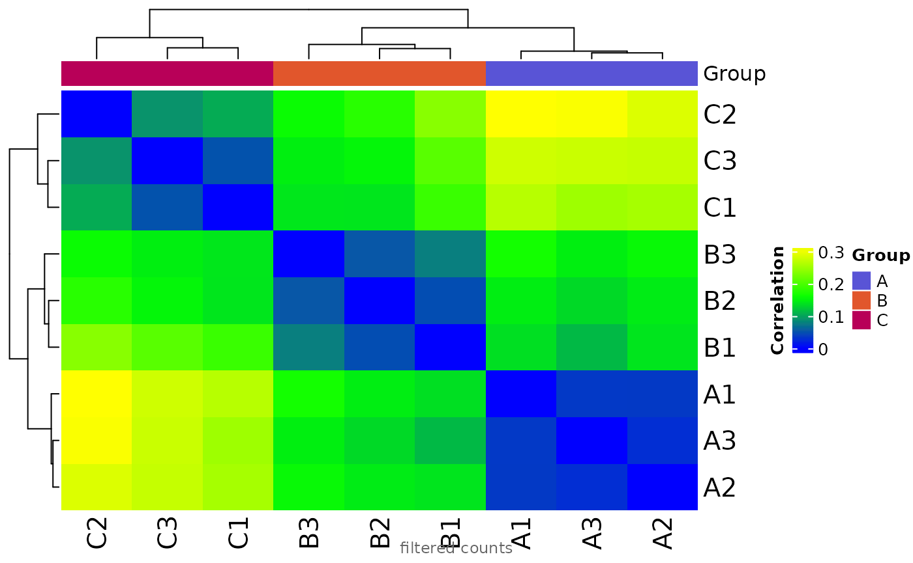
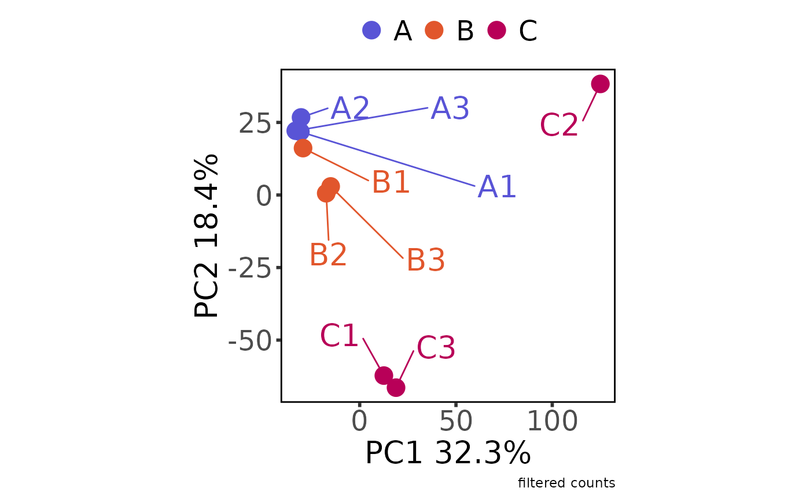

#> Saving 7.29 x 4.51 in image
#> Saving 7.29 x 4.51 in image
#> * normalizing filt counts
#>
#> Total number of features included: 7943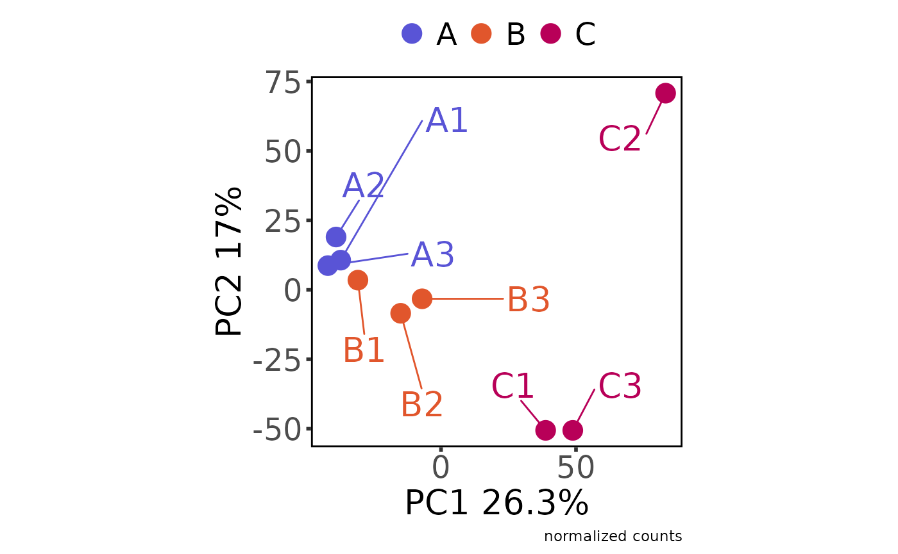
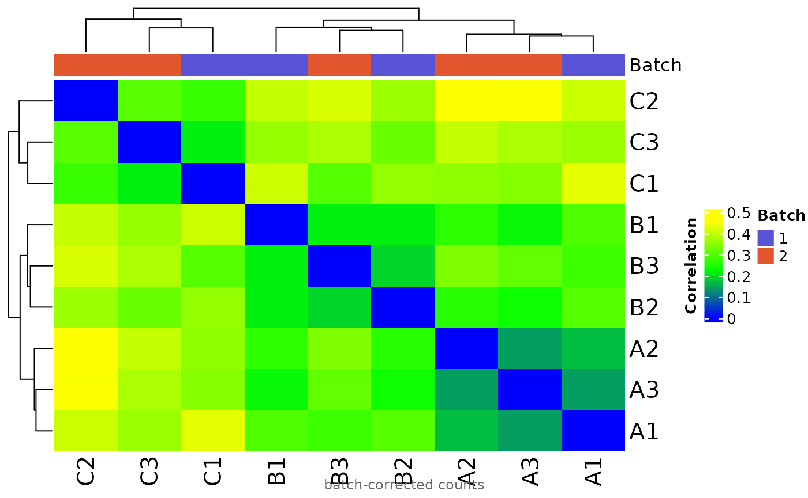
#> Saving 7.29 x 4.51 in image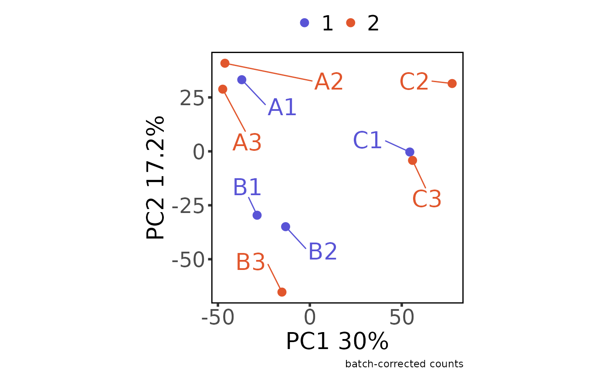
#> Saving 7.29 x 4.51 in image
#> Sample columns: A1, Sample columns: A2, Sample columns: A3, Sample columns: B1, Sample columns: B2, Sample columns: B3, Sample columns: C1, Sample columns: C2, Sample columns: C3
#>
#> * batch-correcting norm-voom counts
#>
#> Found2batches
#>
#> Adjusting for2covariate(s) or covariate level(s)
#>
#> Standardizing Data across genes
#>
#> Fitting L/S model and finding priors
#>
#> Finding parametric adjustments
#>
#> Adjusting the Data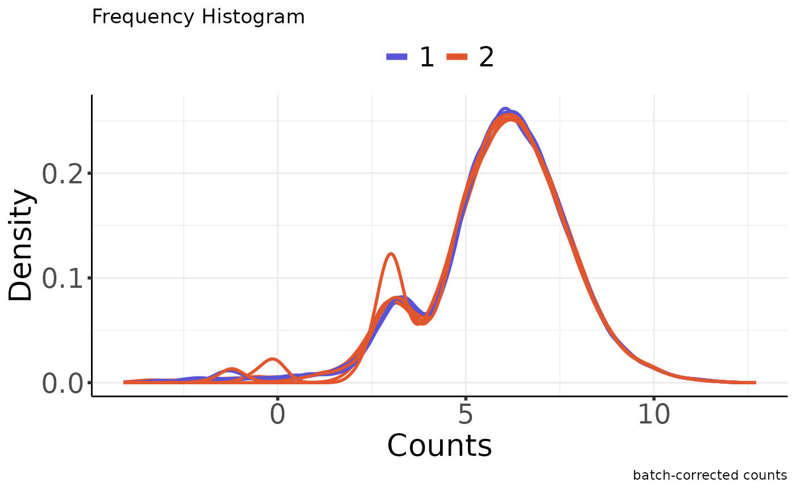
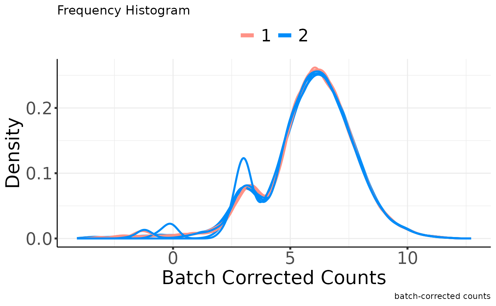
#> Saving 7.29 x 4.51 in image
#> Saving 7.29 x 4.51 in image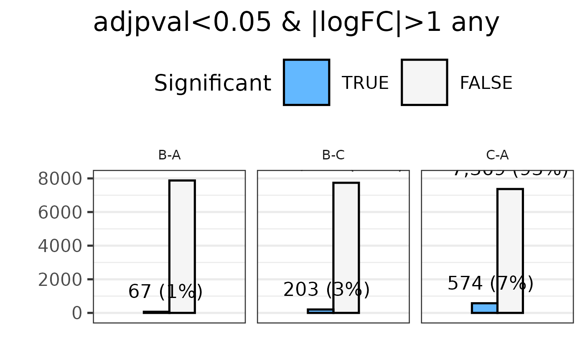
#> The total number of features in output: 7943
#> Number of samples after batch correction: 10
#> * differential counts
#> Setting first column of `counts` as gene annotation.
#> Total number of genes included: 7943
#> `geom_smooth()` using method = 'gam' and formula = 'y ~ s(x, bs = "cs")'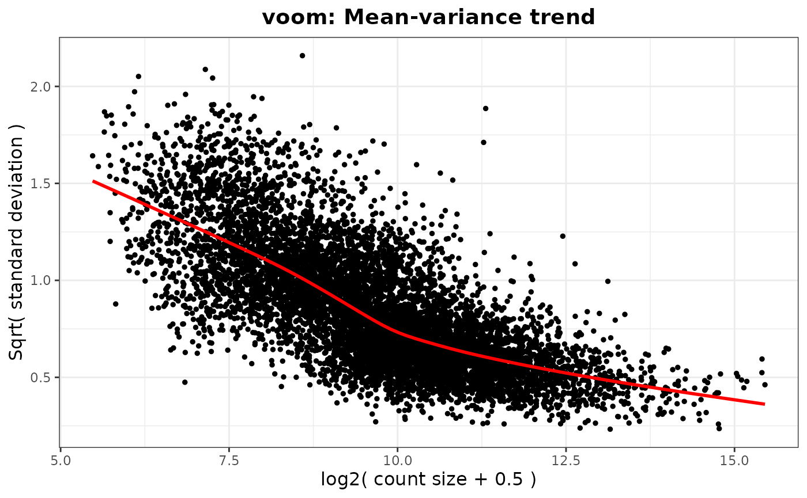
#> Saving 7.29 x 4.51 in image
#> `geom_smooth()` using method = 'gam' and formula = 'y ~ s(x, bs = "cs")'
#> Joining with `by = join_by(GeneName)`
#> Joining with `by = join_by(GeneName)`
#> * filtering differential features
#>
#> Total number of genes selected with adjpval < 0.05 and | logFC | ≥ 1 is sum(selgenes)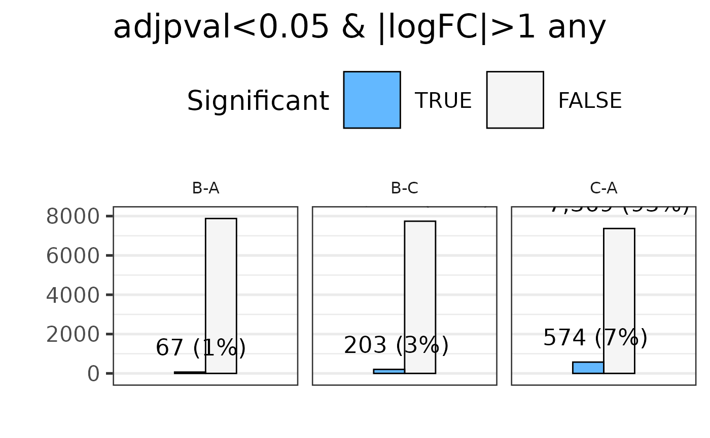
#> Saving 7.29 x 4.51 in image
moo_nidap@analyses$diff |>
join_dfs_wide() |>
head()
#> Joining with `by = join_by(GeneName)`
#> Joining with `by = join_by(GeneName)`
#> GeneName B-A_FC B-A_logFC B-A_tstat B-A_pval B-A_adjpval C-A_FC
#> 1 Mrpl15 1.056918 0.07986336 0.2296406 0.8223259 0.9682828 -1.070209
#> 2 Lypla1 1.365417 0.44934209 1.1181111 0.2858929 0.7838255 -1.071684
#> 3 Tcea1 1.083512 0.11571458 0.3646249 0.7218792 0.9500829 -1.178162
#> 4 Atp6v1h 1.312326 0.39212576 1.1284456 0.2816801 0.7806646 -1.221292
#> 5 Rb1cc1 1.517238 0.60144765 1.3139591 0.2139732 0.7170238 1.312261
#> 6 Pcmtd1 1.117922 0.16081942 0.2599816 0.7993845 0.9653317 3.252260
#> C-A_logFC C-A_tstat C-A_pval C-A_adjpval B-C_FC B-C_logFC
#> 1 -0.09789257 -0.2970416 0.771628352 0.88942737 1.131123 0.1777559
#> 2 -0.09987974 -0.2548947 0.803217764 0.90681218 1.463296 0.5492218
#> 3 -0.23653758 -0.7638738 0.460029952 0.68969760 1.276552 0.3522522
#> 4 -0.28840773 -0.8323447 0.421834968 0.65853678 1.602732 0.6805335
#> 5 0.39205423 0.9026838 0.384853122 0.62798961 1.156202 0.2093934
#> 6 1.70144270 3.4089997 0.005343376 0.05681718 -2.909202 -1.5406233
#> B-C_tstat B-C_pval B-C_adjpval
#> 1 0.5275092 0.60767222 0.8359440
#> 2 1.3957137 0.18865496 0.4856181
#> 3 1.1310868 0.28061102 0.5880985
#> 4 1.9895488 0.07046708 0.3155517
#> 5 0.4952214 0.62958893 0.8474567
#> 6 -2.9434322 0.01255963 0.1421555
moo_nidap@analyses$diff_filt |> head()
#> GeneName B-A_FC B-A_logFC B-A_tstat B-A_pval B-A_adjpval C-A_FC C-A_logFC
#> 1 Rrs1 -2.06 -1.040 -2.860 0.0146 0.274 -2.71 -1.44
#> 2 Mcm3 -1.45 -0.540 -1.850 0.0895 0.549 -2.46 -1.30
#> 3 Ogfrl1 1.07 0.102 0.293 0.7750 0.960 -3.77 -1.92
#> 4 Smap1 2.96 1.570 2.010 0.0686 0.500 5.68 2.51
#> 5 Plekhb2 -1.24 -0.312 -1.100 0.2950 0.789 2.69 1.43
#> 6 Il18r1 2.42 1.280 0.716 0.4880 0.873 36.60 5.19
#> C-A_tstat C-A_pval C-A_adjpval B-C_FC B-C_logFC B-C_tstat B-C_pval
#> 1 -3.84 2.45e-03 0.03640 1.32 0.400 0.945 3.64e-01
#> 2 -4.31 1.07e-03 0.02290 1.69 0.756 2.360 3.62e-02
#> 3 -4.03 1.74e-03 0.03050 4.05 2.020 4.010 1.79e-03
#> 4 3.59 3.81e-03 0.04690 -1.92 -0.938 -1.740 1.07e-01
#> 5 5.98 7.03e-05 0.00461 -3.34 -1.740 -6.970 1.69e-05
#> 6 3.16 8.41e-03 0.07450 -15.10 -3.920 -4.210 1.26e-03
#> B-C_adjpval
#> 1 0.66400
#> 2 0.23400
#> 3 0.05570
#> 4 0.38000
#> 5 0.00334
#> 6 0.04690The multiOmicDataSet object structure
str(moo_nidap)
#> <MOSuite::multiOmicDataSet>
#> @ sample_meta:'data.frame': 9 obs. of 5 variables:
#> .. $ Sample : chr "A1" "A2" "A3" "B1" ...
#> .. $ Group : chr "A" "A" "A" "B" ...
#> .. $ Replicate: num 1 2 3 1 2 3 1 2 3
#> .. $ Batch : num 1 2 2 1 1 2 1 2 2
#> .. $ Label : chr "A1" "A2" "A3" "B1" ...
#> .. - attr(*, "spec")=List of 3
#> .. ..$ cols :List of 5
#> .. .. ..$ Sample : list()
#> .. .. .. ..- attr(*, "class")= chr [1:2] "collector_character" "collector"
#> .. .. ..$ Group : list()
#> .. .. .. ..- attr(*, "class")= chr [1:2] "collector_character" "collector"
#> .. .. ..$ Replicate: list()
#> .. .. .. ..- attr(*, "class")= chr [1:2] "collector_double" "collector"
#> .. .. ..$ Batch : list()
#> .. .. .. ..- attr(*, "class")= chr [1:2] "collector_double" "collector"
#> .. .. ..$ Label : list()
#> .. .. .. ..- attr(*, "class")= chr [1:2] "collector_character" "collector"
#> .. ..$ default: list()
#> .. .. ..- attr(*, "class")= chr [1:2] "collector_guess" "collector"
#> .. ..$ delim : chr ","
#> .. ..- attr(*, "class")= chr "col_spec"
#> .. - attr(*, "problems")=<externalptr>
#> @ annotation :'data.frame': 43280 obs. of 1 variable:
#> .. $ GeneName: chr "RP23-271O17.1" "Gm26206" "Xkr4" "RP23-317L18.1" ...
#> .. - attr(*, "spec")=List of 3
#> .. ..$ cols :List of 10
#> .. .. ..$ GeneName: list()
#> .. .. .. ..- attr(*, "class")= chr [1:2] "collector_character" "collector"
#> .. .. ..$ A1 : list()
#> .. .. .. ..- attr(*, "class")= chr [1:2] "collector_double" "collector"
#> .. .. ..$ A2 : list()
#> .. .. .. ..- attr(*, "class")= chr [1:2] "collector_double" "collector"
#> .. .. ..$ A3 : list()
#> .. .. .. ..- attr(*, "class")= chr [1:2] "collector_double" "collector"
#> .. .. ..$ B1 : list()
#> .. .. .. ..- attr(*, "class")= chr [1:2] "collector_double" "collector"
#> .. .. ..$ B2 : list()
#> .. .. .. ..- attr(*, "class")= chr [1:2] "collector_double" "collector"
#> .. .. ..$ B3 : list()
#> .. .. .. ..- attr(*, "class")= chr [1:2] "collector_double" "collector"
#> .. .. ..$ C1 : list()
#> .. .. .. ..- attr(*, "class")= chr [1:2] "collector_double" "collector"
#> .. .. ..$ C2 : list()
#> .. .. .. ..- attr(*, "class")= chr [1:2] "collector_double" "collector"
#> .. .. ..$ C3 : list()
#> .. .. .. ..- attr(*, "class")= chr [1:2] "collector_double" "collector"
#> .. ..$ default: list()
#> .. .. ..- attr(*, "class")= chr [1:2] "collector_guess" "collector"
#> .. ..$ delim : chr ","
#> .. ..- attr(*, "class")= chr "col_spec"
#> .. - attr(*, "problems")=<externalptr>
#> @ counts :List of 5
#> .. $ raw :'data.frame': 43280 obs. of 10 variables:
#> .. ..$ GeneName: chr [1:43280] "RP23-271O17.1" "Gm26206" "Xkr4" "RP23-317L18.1" ...
#> .. ..$ A1 : num [1:43280] 0 0 0 0 0 0 0 0 0 0 ...
#> .. ..$ A2 : num [1:43280] 0 0 0 0 0 0 0 0 0 0 ...
#> .. ..$ A3 : num [1:43280] 0 0 0 0 0 0 0 0 0 0 ...
#> .. ..$ B1 : num [1:43280] 0 0 0 0 0 0 0 0 0 0 ...
#> .. ..$ B2 : num [1:43280] 0 0 0 0 0 0 0 0 0 1 ...
#> .. ..$ B3 : num [1:43280] 0 0 0 0 0 0 0 0 0 0 ...
#> .. ..$ C1 : num [1:43280] 0 0 0 0 0 0 0 0 0 0 ...
#> .. ..$ C2 : num [1:43280] 0 0 0 0 0 0 0 0 0 0 ...
#> .. ..$ C3 : num [1:43280] 0 0 0 0 0 0 0 0 0 0 ...
#> .. ..- attr(*, "spec")=List of 3
#> .. .. ..$ cols :List of 10
#> .. .. .. ..$ GeneName: list()
#> .. .. .. .. ..- attr(*, "class")= chr [1:2] "collector_character" "collector"
#> .. .. .. ..$ A1 : list()
#> .. .. .. .. ..- attr(*, "class")= chr [1:2] "collector_double" "collector"
#> .. .. .. ..$ A2 : list()
#> .. .. .. .. ..- attr(*, "class")= chr [1:2] "collector_double" "collector"
#> .. .. .. ..$ A3 : list()
#> .. .. .. .. ..- attr(*, "class")= chr [1:2] "collector_double" "collector"
#> .. .. .. ..$ B1 : list()
#> .. .. .. .. ..- attr(*, "class")= chr [1:2] "collector_double" "collector"
#> .. .. .. ..$ B2 : list()
#> .. .. .. .. ..- attr(*, "class")= chr [1:2] "collector_double" "collector"
#> .. .. .. ..$ B3 : list()
#> .. .. .. .. ..- attr(*, "class")= chr [1:2] "collector_double" "collector"
#> .. .. .. ..$ C1 : list()
#> .. .. .. .. ..- attr(*, "class")= chr [1:2] "collector_double" "collector"
#> .. .. .. ..$ C2 : list()
#> .. .. .. .. ..- attr(*, "class")= chr [1:2] "collector_double" "collector"
#> .. .. .. ..$ C3 : list()
#> .. .. .. .. ..- attr(*, "class")= chr [1:2] "collector_double" "collector"
#> .. .. ..$ default: list()
#> .. .. .. ..- attr(*, "class")= chr [1:2] "collector_guess" "collector"
#> .. .. ..$ delim : chr ","
#> .. .. ..- attr(*, "class")= chr "col_spec"
#> .. ..- attr(*, "problems")=<externalptr>
#> .. $ clean:'data.frame': 43280 obs. of 10 variables:
#> .. ..$ GeneName: chr [1:43280] "RP23-271O17.1" "Gm26206" "Xkr4" "RP23-317L18.1" ...
#> .. ..$ A1 : num [1:43280] 0 0 0 0 0 0 0 0 0 0 ...
#> .. ..$ A2 : num [1:43280] 0 0 0 0 0 0 0 0 0 0 ...
#> .. ..$ A3 : num [1:43280] 0 0 0 0 0 0 0 0 0 0 ...
#> .. ..$ B1 : num [1:43280] 0 0 0 0 0 0 0 0 0 0 ...
#> .. ..$ B2 : num [1:43280] 0 0 0 0 0 0 0 0 0 1 ...
#> .. ..$ B3 : num [1:43280] 0 0 0 0 0 0 0 0 0 0 ...
#> .. ..$ C1 : num [1:43280] 0 0 0 0 0 0 0 0 0 0 ...
#> .. ..$ C2 : num [1:43280] 0 0 0 0 0 0 0 0 0 0 ...
#> .. ..$ C3 : num [1:43280] 0 0 0 0 0 0 0 0 0 0 ...
#> .. ..- attr(*, "spec")=List of 3
#> .. .. ..$ cols :List of 10
#> .. .. .. ..$ GeneName: list()
#> .. .. .. .. ..- attr(*, "class")= chr [1:2] "collector_character" "collector"
#> .. .. .. ..$ A1 : list()
#> .. .. .. .. ..- attr(*, "class")= chr [1:2] "collector_double" "collector"
#> .. .. .. ..$ A2 : list()
#> .. .. .. .. ..- attr(*, "class")= chr [1:2] "collector_double" "collector"
#> .. .. .. ..$ A3 : list()
#> .. .. .. .. ..- attr(*, "class")= chr [1:2] "collector_double" "collector"
#> .. .. .. ..$ B1 : list()
#> .. .. .. .. ..- attr(*, "class")= chr [1:2] "collector_double" "collector"
#> .. .. .. ..$ B2 : list()
#> .. .. .. .. ..- attr(*, "class")= chr [1:2] "collector_double" "collector"
#> .. .. .. ..$ B3 : list()
#> .. .. .. .. ..- attr(*, "class")= chr [1:2] "collector_double" "collector"
#> .. .. .. ..$ C1 : list()
#> .. .. .. .. ..- attr(*, "class")= chr [1:2] "collector_double" "collector"
#> .. .. .. ..$ C2 : list()
#> .. .. .. .. ..- attr(*, "class")= chr [1:2] "collector_double" "collector"
#> .. .. .. ..$ C3 : list()
#> .. .. .. .. ..- attr(*, "class")= chr [1:2] "collector_double" "collector"
#> .. .. ..$ default: list()
#> .. .. .. ..- attr(*, "class")= chr [1:2] "collector_guess" "collector"
#> .. .. ..$ delim : chr ","
#> .. .. ..- attr(*, "class")= chr "col_spec"
#> .. ..- attr(*, "problems")=<externalptr>
#> .. $ filt :'data.frame': 7943 obs. of 10 variables:
#> .. ..$ GeneName: chr [1:7943] "Mrpl15" "Lypla1" "Tcea1" "Atp6v1h" ...
#> .. ..$ A1 : num [1:7943] 1245 1483 1381 1033 666 ...
#> .. ..$ A2 : num [1:7943] 1341 1410 2044 1959 1397 ...
#> .. ..$ A3 : num [1:7943] 1476 1370 2051 1890 1576 ...
#> .. ..$ B1 : num [1:7943] 965 1146 2325 2075 681 ...
#> .. ..$ B2 : num [1:7943] 1235 1422 2386 2702 2040 ...
#> .. ..$ B3 : num [1:7943] 1784 2624 1893 2150 1988 ...
#> .. ..$ C1 : num [1:7943] 1058 991 2391 2436 774 ...
#> .. ..$ C2 : num [1:7943] 1732 1101 916 1321 1921 ...
#> .. ..$ C3 : num [1:7943] 1531 2352 2261 1018 2660 ...
#> .. ..- attr(*, "spec")=List of 3
#> .. .. ..$ cols :List of 10
#> .. .. .. ..$ GeneName: list()
#> .. .. .. .. ..- attr(*, "class")= chr [1:2] "collector_character" "collector"
#> .. .. .. ..$ A1 : list()
#> .. .. .. .. ..- attr(*, "class")= chr [1:2] "collector_double" "collector"
#> .. .. .. ..$ A2 : list()
#> .. .. .. .. ..- attr(*, "class")= chr [1:2] "collector_double" "collector"
#> .. .. .. ..$ A3 : list()
#> .. .. .. .. ..- attr(*, "class")= chr [1:2] "collector_double" "collector"
#> .. .. .. ..$ B1 : list()
#> .. .. .. .. ..- attr(*, "class")= chr [1:2] "collector_double" "collector"
#> .. .. .. ..$ B2 : list()
#> .. .. .. .. ..- attr(*, "class")= chr [1:2] "collector_double" "collector"
#> .. .. .. ..$ B3 : list()
#> .. .. .. .. ..- attr(*, "class")= chr [1:2] "collector_double" "collector"
#> .. .. .. ..$ C1 : list()
#> .. .. .. .. ..- attr(*, "class")= chr [1:2] "collector_double" "collector"
#> .. .. .. ..$ C2 : list()
#> .. .. .. .. ..- attr(*, "class")= chr [1:2] "collector_double" "collector"
#> .. .. .. ..$ C3 : list()
#> .. .. .. .. ..- attr(*, "class")= chr [1:2] "collector_double" "collector"
#> .. .. ..$ default: list()
#> .. .. .. ..- attr(*, "class")= chr [1:2] "collector_guess" "collector"
#> .. .. ..$ delim : chr ","
#> .. .. ..- attr(*, "class")= chr "col_spec"
#> .. ..- attr(*, "problems")=<externalptr>
#> .. $ norm :List of 1
#> .. ..$ voom:'data.frame': 7943 obs. of 10 variables:
#> .. .. ..$ GeneName: chr [1:7943] "Mrpl15" "Lypla1" "Tcea1" "Atp6v1h" ...
#> .. .. ..$ A1 : num [1:7943] 6.79 7.04 6.93 6.51 5.85 ...
#> .. .. ..$ A2 : num [1:7943] 6.7 6.78 7.32 7.26 6.76 ...
#> .. .. ..$ A3 : num [1:7943] 6.64 6.53 7.13 7 6.75 ...
#> .. .. ..$ B1 : num [1:7943] 6.22 6.47 7.48 7.31 5.75 ...
#> .. .. ..$ B2 : num [1:7943] 6.38 6.57 7.33 7.52 7.11 ...
#> .. .. ..$ B3 : num [1:7943] 7.02 7.59 7.11 7.3 7.17 ...
#> .. .. ..$ C1 : num [1:7943] 6.02 5.92 7.19 7.22 5.56 ...
#> .. .. ..$ C2 : num [1:7943] 7.03 6.43 6.19 6.67 7.19 ...
#> .. .. ..$ C3 : num [1:7943] 6.6 7.25 7.2 6.01 7.43 ...
#> .. $ batch:'data.frame': 7943 obs. of 10 variables:
#> .. ..$ GeneName: chr [1:7943] "Mrpl15" "Lypla1" "Tcea1" "Atp6v1h" ...
#> .. ..$ A1 : num [1:7943] 6.92 7.2 6.87 6.51 6.23 ...
#> .. ..$ A2 : num [1:7943] 6.59 6.66 7.33 7.25 6.46 ...
#> .. ..$ A3 : num [1:7943] 6.54 6.43 7.16 7.02 6.45 ...
#> .. ..$ B1 : num [1:7943] 6.41 6.68 7.42 7.28 6.27 ...
#> .. ..$ B2 : num [1:7943] 6.55 6.78 7.27 7.47 7.35 ...
#> .. ..$ B3 : num [1:7943] 6.88 7.4 7.16 7.33 6.89 ...
#> .. ..$ C1 : num [1:7943] 6.21 6.13 7.13 7.13 6.06 ...
#> .. ..$ C2 : num [1:7943] 6.87 6.32 6.32 6.69 6.88 ...
#> .. ..$ C3 : num [1:7943] 6.48 7.04 7.18 6.1 7.1 ...
#> @ analyses :List of 3
#> .. $ colors :List of 5
#> .. ..$ Sample : Named chr [1:9] "#000000" "#E69F00" "#56B4E9" "#009E73" ...
#> .. .. ..- attr(*, "names")= chr [1:9] "A1" "A2" "A3" "B1" ...
#> .. ..$ Group : Named chr [1:3] "#000000" "#E69F00" "#56B4E9"
#> .. .. ..- attr(*, "names")= chr [1:3] "A" "B" "C"
#> .. ..$ Replicate: Named chr [1:3] "#000000" "#E69F00" "#56B4E9"
#> .. .. ..- attr(*, "names")= chr [1:3] "1" "2" "3"
#> .. ..$ Batch : Named chr [1:2] "#000000" "#E69F00"
#> .. .. ..- attr(*, "names")= chr [1:2] "1" "2"
#> .. ..$ Label : Named chr [1:9] "#000000" "#E69F00" "#56B4E9" "#009E73" ...
#> .. .. ..- attr(*, "names")= chr [1:9] "A1" "A2" "A3" "B1" ...
#> .. $ diff :List of 3
#> .. ..$ B-A:'data.frame': 7943 obs. of 6 variables:
#> .. .. ..$ GeneName: chr [1:7943] "Mrpl15" "Lypla1" "Tcea1" "Atp6v1h" ...
#> .. .. ..$ FC : num [1:7943] 1.06 1.37 1.08 1.31 1.52 ...
#> .. .. ..$ logFC : num [1:7943] 0.0799 0.4493 0.1157 0.3921 0.6014 ...
#> .. .. ..$ tstat : num [1:7943] 0.23 1.118 0.365 1.128 1.314 ...
#> .. .. ..$ pval : num [1:7943] 0.822 0.286 0.722 0.282 0.214 ...
#> .. .. ..$ adjpval : num [1:7943] 0.968 0.784 0.95 0.781 0.717 ...
#> .. ..$ C-A:'data.frame': 7943 obs. of 6 variables:
#> .. .. ..$ GeneName: chr [1:7943] "Mrpl15" "Lypla1" "Tcea1" "Atp6v1h" ...
#> .. .. ..$ FC : num [1:7943] -1.07 -1.07 -1.18 -1.22 1.31 ...
#> .. .. ..$ logFC : num [1:7943] -0.0979 -0.0999 -0.2365 -0.2884 0.3921 ...
#> .. .. ..$ tstat : num [1:7943] -0.297 -0.255 -0.764 -0.832 0.903 ...
#> .. .. ..$ pval : num [1:7943] 0.772 0.803 0.46 0.422 0.385 ...
#> .. .. ..$ adjpval : num [1:7943] 0.889 0.907 0.69 0.659 0.628 ...
#> .. ..$ B-C:'data.frame': 7943 obs. of 6 variables:
#> .. .. ..$ GeneName: chr [1:7943] "Mrpl15" "Lypla1" "Tcea1" "Atp6v1h" ...
#> .. .. ..$ FC : num [1:7943] 1.13 1.46 1.28 1.6 1.16 ...
#> .. .. ..$ logFC : num [1:7943] 0.178 0.549 0.352 0.681 0.209 ...
#> .. .. ..$ tstat : num [1:7943] 0.528 1.396 1.131 1.99 0.495 ...
#> .. .. ..$ pval : num [1:7943] 0.6077 0.1887 0.2806 0.0705 0.6296 ...
#> .. .. ..$ adjpval : num [1:7943] 0.836 0.486 0.588 0.316 0.847 ...
#> .. $ diff_filt:'data.frame': 641 obs. of 16 variables:
#> .. ..$ GeneName : chr [1:641] "Rrs1" "Mcm3" "Ogfrl1" "Smap1" ...
#> .. ..$ B-A_FC : num [1:641] -2.06 -1.45 1.07 2.96 -1.24 2.42 -1.63 2.4 53.3 1.63 ...
#> .. ..$ B-A_logFC : num [1:641] -1.04 -0.54 0.102 1.57 -0.312 1.28 -0.708 1.26 5.74 0.709 ...
#> .. ..$ B-A_tstat : num [1:641] -2.86 -1.85 0.293 2.01 -1.1 0.716 -1.9 3.2 3.65 1.93 ...
#> .. ..$ B-A_pval : num [1:641] 0.0146 0.0895 0.775 0.0686 0.295 0.488 0.0821 0.0079 0.00344 0.0786 ...
#> .. ..$ B-A_adjpval: num [1:641] 0.274 0.549 0.96 0.5 0.789 0.873 0.532 0.211 0.139 0.525 ...
#> .. ..$ C-A_FC : num [1:641] -2.71 -2.46 -3.77 5.68 2.69 36.6 3.13 2.74 287 -6.41 ...
#> .. ..$ C-A_logFC : num [1:641] -1.44 -1.3 -1.92 2.51 1.43 5.19 1.65 1.45 8.16 -2.68 ...
#> .. ..$ C-A_tstat : num [1:641] -3.84 -4.31 -4.03 3.59 5.98 3.16 5.61 3.97 5.45 -3.83 ...
#> .. ..$ C-A_pval : num [1:641] 2.45e-03 1.07e-03 1.74e-03 3.81e-03 7.03e-05 8.41e-03 1.25e-04 1.95e-03 1.60e-04 2.50e-03 ...
#> .. ..$ C-A_adjpval: num [1:641] 0.0364 0.0229 0.0305 0.0469 0.00461 0.0745 0.00655 0.0321 0.00759 0.0368 ...
#> .. ..$ B-C_FC : num [1:641] 1.32 1.69 4.05 -1.92 -3.34 -15.1 -5.11 -1.14 -5.38 10.5 ...
#> .. ..$ B-C_logFC : num [1:641] 0.4 0.756 2.02 -0.938 -1.74 -3.92 -2.35 -0.19 -2.43 3.39 ...
#> .. ..$ B-C_tstat : num [1:641] 0.945 2.36 4.01 -1.74 -6.97 -4.21 -7.09 -0.585 -4 4.57 ...
#> .. ..$ B-C_pval : num [1:641] 3.64e-01 3.62e-02 1.79e-03 1.07e-01 1.69e-05 1.26e-03 1.43e-05 5.69e-01 1.84e-03 6.86e-04 ...
#> .. ..$ B-C_adjpval: num [1:641] 0.664 0.234 0.0557 0.38 0.00334 0.0469 0.00307 0.815 0.0562 0.0334 ...